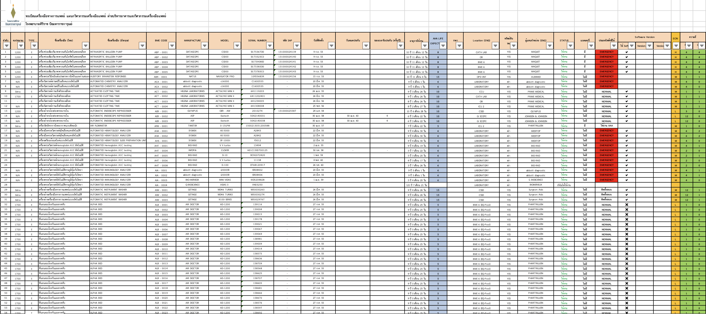
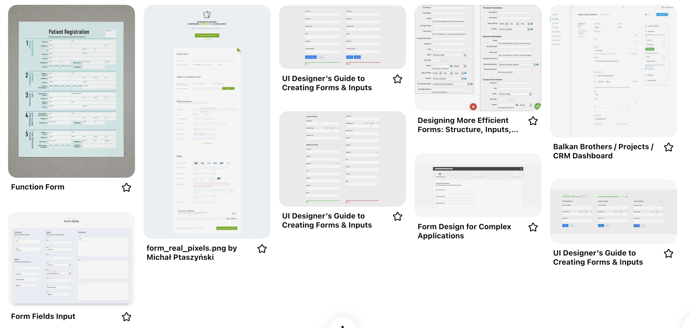
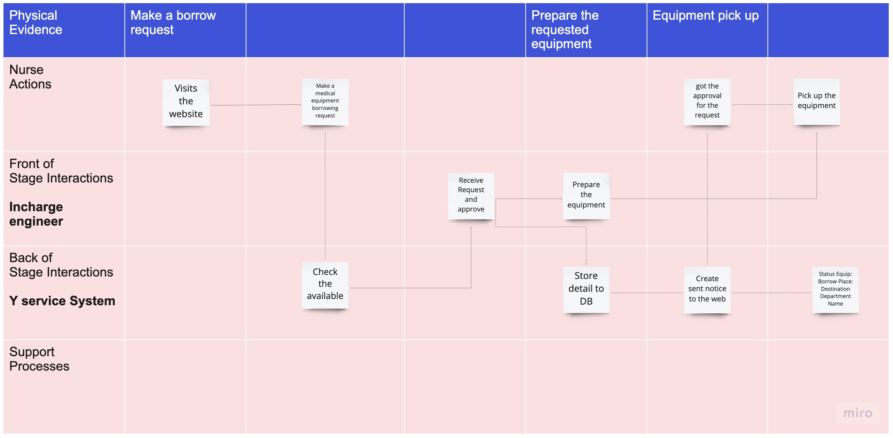

Problem
For many decades, the medical equipment service department at Siriraj hospital manages a big pool of medical equipment via paper and phone calls. They realized that this process creates so many problems. For example, The equipment was lost and reappeared without history, unmatch data that lead to a problem with auditing, or some of the paper was lost. So we got a request to help them improve this process and reduce the error mistake using a human-centered design process.
Challenge
By that time we only had, one UX designer who knows about business, 3 programmers and the CEO. It was a big challenge to build a system from end-to-end, so we need to break a system to focus on an important one and have a high self-motivation and learning curve. Hence, we chose to start with the first tier of the project which is inputing the data, tracking the equipment and report issues to vendors
The complexity of the workflows and stakeholders makes us have a hard time connecting the dot in each flow and user.
My role
As an only UX designer, I helped a business from scratch. My role wasn't limit to UX design but also balance the needs of business, users and technology was a core of my job
What I did
- Planned a business roadmap and strategy
- Did qualitative and quantitative research
- Managed documentation, user flows and QA
- Led the crossed functional team and monitored tasks and timeline
- Created UX design process and guidline for the team
- Designed wireframe, prototype, UI design the end to end from clients to vendors
- Conducted A/B testing, usability testing and analysis
What I deliverd
- Wireframe and Hi-fi prototype of Desktop and mobile app
- UX and User research framework for the company
- Business and user workflows
- Functional specification and design document
Process
Research
Interviews and Observations
To kick off the project, We needed to under the problems related to equipment installation and tracking. I conducted an observation on every stakeholders' work routine as well as one-on-one interviews. Many issues were widespread. For example, no one realized that the installation process isn't complete due to lacking documents, there was the outdated status of a tool, or the ER department is too busy to return back equipment but another department wanted to immediately borrow without passing the request to a service department and sometimes the equipment never returned.
Insight of the form
One of the biggest problems the service department described is that they have so much data under each of equipment to track and updated manually. Sometimes, they missed out or were confused and put the data in the wrong row or column. The issues caused the unmatch data and loss of time and resources
Here is the excel sheet that they need to fill in every time there is new equipment.
Inspiration
I gathered inspirational examples of forms I liked from both inside and outside of healthcare. The form needed to be intuitive. The color needed to be safe for the eyes and didn't make the eyes hurt after a longer period.
Outcomes
Problem #1
a form
There are many elements to be stored during the registration. Converting an excel sheet that has more than 20 columns to a form is complicated.
Result
This form was created after a discussion and co-creation workshop. It was designed to make users have a similar experience as an excel sheet.
Problem #2
a long list of an uploaded file
There are many documents under the one equipment registration. Sometimes, users lost the paper when time pass or they are mixed it with another equipment registration.
Result
Making the uploading of an important document be part of the registration form is crucial. With this approach, there will be no missing documents or mixing up the information.

Problem #3
Accessing an equipment history
There are many departments involved in this workflow. They always lost some borrow requested papers. It is hard to count how many times it was borrowed when users need this information in requesting vendors to collaborate.
Result
Transforming the requested form to a QR code is an efficient way to access the equipment history. Also, users will see how many times it was borrowed, so they can contact vendors to do a calibration.
Problem #4
Two ways of communication
Communication between two parties is key to this project. Both sides need to have a tool to helps them work together without mismatched information.
Result
There needs to be a system for the hospital and vendors' side. One is a desktop web app for the hospital and an application for a vendor for seamless communication.
Product overview
Service blueprints overview
To build up a deep understanding of our complex user flow from scratch as well as how to transform the paper working process into a digital one, I drove continuous research initiatives. Together with a team, I ran interviews and field observation, In parallel, I created service blueprints to define and test hypotheses of user workflow. After the stakeholders confirmed the initail flow, I developed the design in the next step. This an example of blueprints

Low - fi prototype

Yservice for the hospital
How does it help?
- By converting the paper form to a digital form on the website, there will be always a backup data
- The QR code with a serial number helps users to quickly track the asset and locate them. The losing problem will be reduced
- Notification will send out automatically to vendors when there is a time to do annual maintenance. This reduces users' workload
- With a better asset management system,there will be no problem when auditing a company
Yservice for Vendors

How does it help?
- There will be no lost document between vendors and their customers
- They can track their work from each customer and could perform work more efficiently.
- Create a better communication between vendors and their customers
What I have learned
- Don't try to follow and covert every workflows to a digital one. We should adjust it to a new environment and make it better
- Working with a public sector might need a lot of time and effort to learn their system. We should have a structured plan and prepare the backup plan for the worst case.